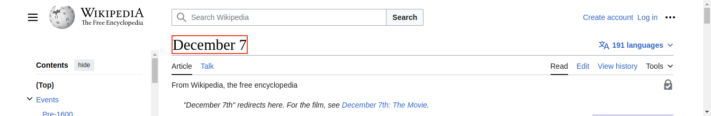
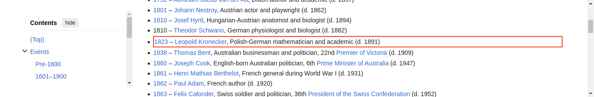
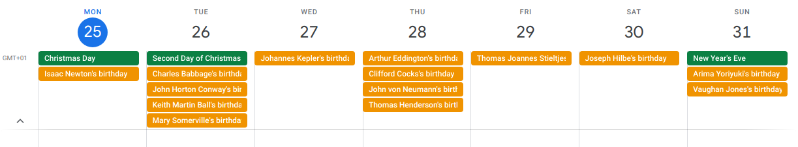
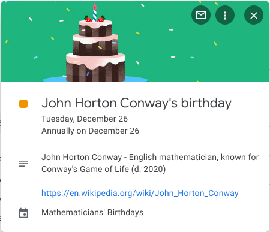

from selenium import webdriver
from selenium.webdriver.chrome.service import Service
from selenium.webdriver.common.by import By
from selenium.common.exceptions import NoSuchElementException
from webdriver_manager.chrome import ChromeDriverManager
from icalendar import Calendar, Event, vRecur
from datetime import date
from abc import ABC, abstractmethod
import pandas as pd
import re
import calendar
import pickle
import jsonI teach several courses in the Applied Mathematics program at NHL Stenden University of Applied Sciences. My favorite days are the ones when there’s something to celebrate (like a birthday) and someone brings cake.
In an effort to convince my department that we should have cake more often, I’ve created a birthday calendar featuring the birthdates of mathematicians, both living and deceased. I scraped these birthdays from Wikipedia and converted them into an ICS file that can be imported into a calendar application like Google Calendar or Microsoft Outlook Calendar.
Read on to learn how I did this.
Importing libraries
We start by importing some libraries. I’m using Selenium for webscraping. The icalendar package is used to create the birthday calendar.
Scraping Wikipedia
Wikipedia has, for each day of the year, an entry listing historical events, births, and deaths. We will scrape, for each day in a year, from this list, the births of mathematicians and place them in a dictionary.
To see what I mean, let’s look at the entry for December, the 7th.

Each wikipedia page has a title which is shown here with a red border. If we scroll down we see a list of people who were born on this day. The first mathematician we find is Leopold Kronecker.

Scrolling further down, we find three more mathematicians.
The idea is to open for each day in the year its corresponding Wikipedia page. Using XPATH expressions, we’ll extract the title of the page and each row in the list of births that contains the word mathematician. Each row, contains the year the mathematician was born (1823), their name (Leopold Kronecker), a one-line bio (Polish-German mathematician and academic (d. 1891)), and a URL pointing to a Wikipedia page about the mathematician in question (https://en.wikipedia.org/wiki/Leopold_Kronecker).
Building the scraper
There are various ways to scrape using Python. Popular scraping libraries include Scrapy and Beautiful Soup. I usually use Selenium because it allows me to scrape from websites that render HTML from JavaScript. Selenium can be a bit slow, but we’re only scraping 366 pages so it won’t take that long.
In previous projects I have created some helper classes that allow me to quickly set up a scraping task. These classes can be easily chained together to define a new scraper. I got inspired by scraper tools such as Web scraper and ParseHub that let you compose a tree that specifies how to parse data from a website. Using the classes I defined, we can do something similar in Python.
All these helper classes inherit from an abstract base class called BaseSelector.
class BaseSelector(ABC):
@abstractmethod
def scrape(self, scraper, parent, **kwargs):
passClasses that inherit from BaseSelector need to provide an implementation of the scrape method. This method generally scrapes some content from a webpage and returns this wrapped up in a Python dictionary. It may scrape a single DOM element, and return a single dictionary object, or it may scrape multiple elements and return these as a list of dictionaries.
Scraping attributes
The following class is one of these classes that inherit from BaseSelector. It locates an element(s) and returns a specific attribute of that element, such as the href (in case it matches an anchor link).
class AttributeSelector(BaseSelector):
def __init__(self, id, by, path, attribute, multiple=False, default=None):
self.id = id
self.by = by
self.path = path
self.attribute = attribute
self.multiple = multiple
self.default = default
def scrape(self, scraper, parent, **kwargs):
if not self.multiple:
try:
elem = parent.find_element(self.by, self.path.format(**kwargs))
return {self.id: elem.get_attribute(self.attribute)}
except NoSuchElementException:
return self.default
else:
elems = parent.find_elements(self.by, self.path.format(**kwargs))
return [{self.id: elem.get_attribute(self.attribute)} for elem in elems]Let’s see how we can use it to scrape the URLs for each mathematicians found on a page (e.g. https://en.m.wikipedia.org/wiki/Leopold_Kronecker).
We create a new AttributeSelector as follows.
urls_selector = AttributeSelector(
'url',
By.XPATH,
"//*[@id='mw-content-text']/div/ul[preceding::h2/span[.='Births'] and following::h2/span[.='Deaths']]/li[contains(., 'mathematician')]/a[string-length(.)>4][1]",
'href',
multiple=True
)We provide a key (‘url’) for the dictionary object.
We also tell it to search for an element addressed by an XPATH expression. In this case we look for list items that contain the string mathematician and find within each list item the first link with a content length of greater than four. We check for length because sometimes it may find multiple links on a single line but the first link always refers to a year (and is therefor at most 4 digits long). Note how we’re only looking for li elements after a span that contains the text Births, but before a span that contains the word Deaths. XPATH expressions can get a bit unwieldly but they’re very powerful.
Links (a or anchor tags) have an href attribute that we are interested in. We can expect multiple results as there may be multiple mathematicians born on the same day.
Before we can call this urls_selector object, we first need to initilize a Selenium webdriver.
driver = webdriver.Chrome(service=Service(ChromeDriverManager().install()))This will open a new instance of Google Chrome. Now we can open the webpage we want to scrape from.
driver.get("https://en.wikipedia.org/wiki/December_7")And we get the URLs we’re interested in.
urls = urls_selector.scrape(driver, driver)urls[{'url': 'https://en.wikipedia.org/wiki/Leopold_Kronecker'},
{'url': 'https://en.wikipedia.org/wiki/Danilo_BlanuC5%A1a'},
{'url': 'https://en.wikipedia.org/wiki/Mary_Ellen_Rudin'},
{'url': 'https://en.wikipedia.org/wiki/Nick_Katz'}]Scraping text
Most often we are interested in the text that is contained in an element. To scrape simple text we can use the TextSelector class.
class TextSelector(AttributeSelector):
def __init__(self, id, by, path, multiple=False, default=None):
super().__init__(id, by, path, 'innerText', multiple, default)It extends the AttributeSelector class we defined before. We can use it as follows to get all text of lines that contain the word mathematician.
mathematician_selector = TextSelector(
'mathematician',
By.XPATH,
"//*[@id='mw-content-text']/div/ul[preceding::h2/span[.='Births'] and following::h2/span[.='Deaths']]/li[contains(., 'mathematician')]",
multiple=True
)Again we use XPATH to address the elements we’re interested in. This time we don’t have to check for URL length, so the expression is a bit simpler. Let’s use it to get each line corresponding to the birth of a mathematician.
mathematicians = mathematician_selector.scrape(driver, driver)mathematicians[{'mathematician': '1823 – Leopold Kronecker, Polish-German mathematician and academic (d. 1891)'},
{'mathematician': '1903 – Danilo Blanuša, Croatian mathematician, physicist, and academic (d. 1987)'},
{'mathematician': '1924 – Mary Ellen Rudin, American mathematician (d. 2013)[16]'},
{'mathematician': '1943 – Nick Katz, American mathematician and academic'}]Similarly we can scrape the month and day from the top of the page.
month_day_selector = TextSelector('month_day', By.XPATH, '//*[@id="firstHeading"]/span')month_day = month_day_selector.scrape(driver, driver)month_day{'month_day': 'December 7'}Cleaning and transforming data
We see that the third item in the mathematicians list, contains a reference as indicated by [16]. We want to get rid of this. Furthermore, we also want to split the values for the key mathematician into several keys, such as, year, name, bio.
The value month_day contains both the month and day. This is another thing we will want to split up into two seperate keys.
We could leave it as is, and do some data cleaning after having scraped all pages. With the approach I’m taking here, it’s however quite easy to immediately clean and transform the data while scraping.
I defined a MapSelector class that let’s me map a function over scraped data.
class MapSelector(BaseSelector):
def __init__(self, fun, child):
self.fun = fun
self.child = child
def scrape(self, scraper, parent, **kwargs):
data = self.child.scrape(scraper, parent, **kwargs)
if type(data) == dict:
return self.fun(data)
return list(map(self.fun, data))This class doesn’t do any actual scraping, but is meant to be chained with other selector classes. Let’s see how it can be used to split up month_day values. We’ll also convert the month name to its number.
split_month_day_selector = MapSelector(
lambda m: {
"day": int(m['month_day'].split()[1]),
"month": list(calendar.month_name).index(m['month_day'].split()[0])
},
month_day_selector
)Note how I’m specifying a lambda function to split up month_day into two seperate keys. I’m passing the month_day_selector we defined above to the constructor as well so the MapSelector knows where to get data from before applying the function.
split_month_day = split_month_day_selector.scrape(driver, driver)Calling scrape on the split_month_day_selector object will cause it to call the scrape function on the month_day_selector which does the actual scraping.
split_month_day{'day': 7, 'month': 12}Instead of providing a lambda function, we can use a regular function. Let’s create a function that cleans and splits up the mathematician key in the mathematicians list.
def unpack_mathematician_data(m):
data = re.sub(r'\[[^\]]*\]', '', m['mathematician']) # remove any references
match = re.match(r'^(\d+)\s.*–\s*(.*?),\s*(.*?)$', data)
return {
"year": int(match.group(1)),
"name": match.group(2),
"bio": match.group(3)
}split_mathematicians_selector = MapSelector(unpack_mathematician_data, mathematician_selector)split_mathematicians = split_mathematicians_selector.scrape(driver, driver)Now we have our data in seperate keys.
split_mathematicians[{'year': 1823,
'name': 'Leopold Kronecker',
'bio': 'Polish-German mathematician and academic (d. 1891)'},
{'year': 1903,
'name': 'Danilo Blanuša',
'bio': 'Croatian mathematician, physicist, and academic (d. 1987)'},
{'year': 1924,
'name': 'Mary Ellen Rudin',
'bio': 'American mathematician (d. 2013)'},
{'year': 1943,
'name': 'Nick Katz',
'bio': 'American mathematician and academic'}]Merging data
We now have selectors that we can call to scrape a list of dictionaries with the year, name, and biography of each mathematician, and a dictionary with the month and day these mathematicians were born. We also defined a selector that scrapes a list of dictionaries of URLs.
In order to merge data from different selectors I defined a ZipSelector. If it merges two lists, the dicts in the first list will be extended with the keys and values of the dicts in the second list. It will only return as many items as are contained in the shortest list (similar to Python zip). If a list is merged with a dictionary, the dictionary keys are added to each dictionary in the list. If it merges two dictionaries, it returns a single dictionary containing the keys and values of both dictionaries.
class ZipSelector(BaseSelector):
def __init__(self, left, right):
self.left = left
self.right = right
def scrape(self, scraper, parent, **kwargs):
data_left = self.left.scrape(scraper, parent, **kwargs)
data_right = self.right.scrape(scraper, parent, **kwargs)
if type(data_left) == dict and type(data_right) == dict:
return data_left | data_right
elif type(data_left) == dict and type(data_right) == list:
return [data_left | m for m in data_right]
elif type(data_left) == list and type(data_right) == dict:
return [m | data_right for m in data_left]
return [data_left[i] | data_right[i] for i in range(min(len(data_left),len(data_right)))]Let’s see how it works.
zip_month_day_mathematicians_selector = ZipSelector(split_month_day_selector, split_mathematicians_selector)
zip_month_day_mathematicians_urls_selector = ZipSelector(zip_month_day_mathematicians_selector, urls_selector)We first merge the month and day with the year, name, and bio. Then using a second ZipSelector we combine this with url.
zip_month_day_mathematicians_urls = zip_month_day_mathematicians_urls_selector.scrape(driver, driver)If it wasn’t clear already: we don’t need to call the scrape method on each selector object seperately. We are combining selector objects into a tree and just call scrape on the root node and this causes a cascade of calls throughout the tree.
zip_month_day_mathematicians_urls[{'day': 7,
'month': 12,
'year': 1823,
'name': 'Leopold Kronecker',
'bio': 'Polish-German mathematician and academic (d. 1891)',
'url': 'https://en.wikipedia.org/wiki/Leopold_Kronecker'},
{'day': 7,
'month': 12,
'year': 1903,
'name': 'Danilo Blanuša',
'bio': 'Croatian mathematician, physicist, and academic (d. 1987)',
'url': 'https://en.wikipedia.org/wiki/Danilo_Blanu%C5%A1a'},
{'day': 7,
'month': 12,
'year': 1924,
'name': 'Mary Ellen Rudin',
'bio': 'American mathematician (d. 2013)',
'url': 'https://en.wikipedia.org/wiki/Mary_Ellen_Rudin'},
{'day': 7,
'month': 12,
'year': 1943,
'name': 'Nick Katz',
'bio': 'American mathematician and academic',
'url': 'https://en.wikipedia.org/wiki/Nick_Katz'}]Running the scraper
Calling the scrape method will scrape all mathematicians’ birthdays.
data = scraper.scrape(driver, driver)Let’s looks at the first five results.
data[:5][{'day': 1,
'month': 1,
'year': 1878,
'name': 'Agner Krarup Erlang',
'bio': 'Danish mathematician, statistician, and engineer (d. 1929)',
'url': 'https://en.wikipedia.org/wiki/Agner_Krarup_Erlang'},
{'day': 1,
'month': 1,
'year': 1894,
'name': 'Satyendra Nath Bose',
'bio': 'Indian physicist and mathematician (d. 1974)',
'url': 'https://en.wikipedia.org/wiki/Satyendra_Nath_Bose'},
{'day': 1,
'month': 1,
'year': 1905,
'name': 'Stanisław Mazur',
'bio': 'Ukrainian-Polish mathematician and theorist (d. 1981)',
'url': 'https://en.wikipedia.org/wiki/Stanis%C5%82aw_Mazur'},
{'day': 1,
'month': 1,
'year': 1912,
'name': 'Boris Vladimirovich Gnedenko',
'bio': 'Russian mathematician and historian (d. 1995)',
'url': 'https://en.wikipedia.org/wiki/Boris_Vladimirovich_Gnedenko'},
{'day': 2,
'month': 1,
'year': 1803,
'name': 'Guglielmo Libri Carucci dalla Sommaja',
'bio': 'Italian mathematician and academic (d. 1869)',
'url': 'https://en.wikipedia.org/wiki/Guglielmo_Libri_Carucci_dalla_Sommaja'}]We can save the result as a JSON file.
# Save to a JSON file
with open('data.json', 'w') as json_file:
json.dump(data, json_file)Or convert it to a dataframe and save it as CSV.
df = pd.DataFrame(data)
df| day | month | year | name | bio | url | |
|---|---|---|---|---|---|---|
| 0 | 1 | 1 | 1878 | Agner Krarup Erlang | Danish mathematician, statistician, and engine... | https://en.wikipedia.org/wiki/Agner_Krarup_Erlang |
| 1 | 1 | 1 | 1894 | Satyendra Nath Bose | Indian physicist and mathematician (d. 1974) | https://en.wikipedia.org/wiki/Satyendra_Nath_Bose |
| 2 | 1 | 1 | 1905 | Stanisław Mazur | Ukrainian-Polish mathematician and theorist (d... | https://en.wikipedia.org/wiki/Stanis%C5%82aw_M... |
| 3 | 1 | 1 | 1912 | Boris Vladimirovich Gnedenko | Russian mathematician and historian (d. 1995) | https://en.wikipedia.org/wiki/Boris_Vladimirov... |
| 4 | 2 | 1 | 1803 | Guglielmo Libri Carucci dalla Sommaja | Italian mathematician and academic (d. 1869) | https://en.wikipedia.org/wiki/Guglielmo_Libri_... |
| ... | ... | ... | ... | ... | ... | ... |
| 833 | 28 | 12 | 1950 | Clifford Cocks | English mathematician and cryptographer | https://en.wikipedia.org/wiki/Clifford_Cocks |
| 834 | 29 | 12 | 1856 | Thomas Joannes Stieltjes | Dutch-French mathematician and academic (d. 1894) | https://en.wikipedia.org/wiki/Thomas_Joannes_S... |
| 835 | 30 | 12 | 1944 | Joseph Hilbe | American mathematician and philosopher (d. 2017) | https://en.wikipedia.org/wiki/Joseph_Hilbe |
| 836 | 31 | 12 | 1714 | Arima Yoriyuki | Japanese mathematician and educator (d. 1783) | https://en.wikipedia.org/wiki/Arima_Yoriyuki |
| 837 | 31 | 12 | 1952 | Vaughan Jones | New Zealand mathematician and academic (d. 2020) | https://en.wikipedia.org/wiki/Vaughan_Jones |
838 rows × 6 columns
df.to_csv('data.csv', index=False)Creating the calendar
We’re now ready to convert this data into an ICS calendar file so it can be imported into a calendar application, like Google Calendar or Microsoft Outlook.
# Create the calendar
cal = Calendar()
# Iterate through the birthday data and add recurring events to the calendar
for person in data:
name = person['name']
birthdate = date(person['year'], person['month'], person['day'])
bio = person['bio']
url = person['url']
# Create an event for the birthday with recurrence rule
event = Event()
event.add('summary', f"{name}'s birthday")
event.add('description', f"{name} - {bio}\n\n{url}")
event.add('dtstart', birthdate)
event.add('rrule', {'freq': 'yearly'})
event.add('url', url)
event.add('transp', 'TRANSPARENT') # Make events not show up as 'busy'
cal.add_component(event)
# Save the calendar to a file
with open('mathematicians_birthdays_calendar.ics', 'wb') as ics_file:
ics_file.write(cal.to_ical())The file is saved as mathematicians_birthdays_calendar.ics and ready to be imported into your calendar.
Importing the calendar
Here’s how to add the ICS calendar to Google Calendar:
Open Google Calendar:
Open your Google Calendar in a web browser. Ensure that you are logged in with the Google account you want to associate with the birthday calendar.Navigate to “Settings”:
In the top-right corner, click on the gear icon to access the settings menu. From the dropdown, select “Settings.”Choose “Add Calendar”:
In the settings menu, navigate to the “Add calendar” section.Select “From URL”:
Within the “Add calendar” section, choose the “From URL” option.Enter ICS Calendar URL:
Copy and paste the following URL: https://www.aswinvanwoudenberg.com/posts/mathematicians-birthdays-calendar/mathematicians_birthdays_calendar.icsClick “Add Calendar”:
After entering the URL, click the “Add Calendar” button. Google Calendar will validate the URL and add the calendar to your account.View Your New Calendar:
Once added, you should see the new calendar in the left sidebar under “Other calendars.” The birthdays will be displayed on your Google Calendar.

Clicking on an event will show some details including a link to a Wikipedia page to learn more about the mathematician.

Enjoy all the cake!
Isaac Newton’s two birthdays
You may have noticed, after viewing this calendar, that Isaac Newton seemingly has two birthdays, ten days apart. Initially recognized as born on December 25, 1642, his birthday is now more commonly acknowledged as January 4, 1643. This is due to the calendar difference between England and the rest of Europe during his birth. While England stuck to the Julian calendar, lagging ten days behind, the continent had already adopted the Gregorian calendar.
While January 4 is now widely acknowledged as Isaac Newton’s birthday, December 25 continues to be celebrated as Grav-Mass day. This unofficial holiday annually honors Newton’s contributions to the understanding of gravity and mass in physics.
I left both days in the calendar because it means I get to eat even more cake!
Download the code
You can find the code here.